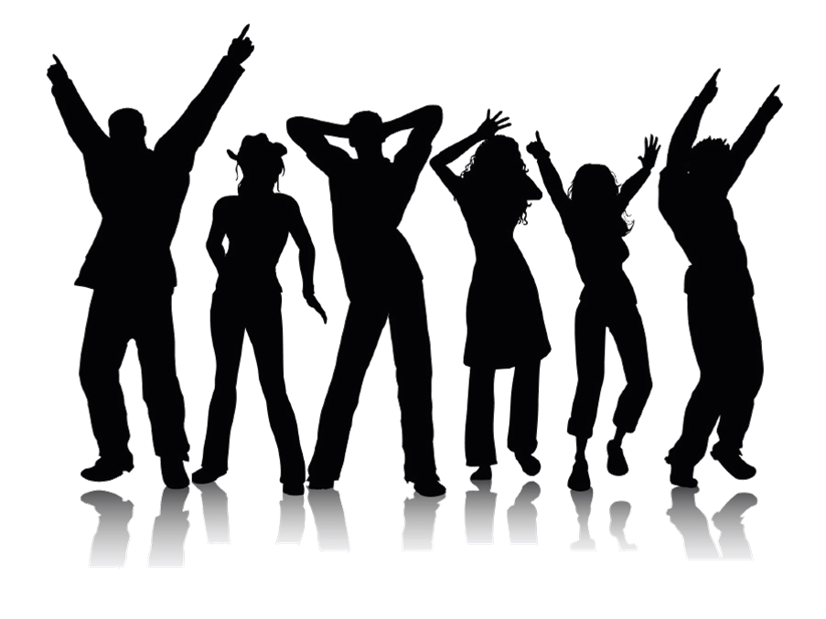

Ti trovi in:
TwoNotes ha lo scopo di creare una comunità virtuale con la passione per la musica. L’idea nasce con lo scopo di unire due format molto particolari e in voga nel web: social network e forum. Prendendo gli aspetti peculiari da entrambe le parti e unendoli con la vastità che compone il mondo musicale, prende vita TwoNotes. Questa eterogeneità ha lo scopo di instaurare una community di appassionati e fanatici da tutta Italia!
Grazie a TwoNotes ciascuno ha la possibilità di esprimere la propria opinione pubblicando contenuti sottoforma di post. Inoltre ha modo di confrontarsi con gli altri utenti riguardo gli argomenti trattati grazie alla sezione commenti, dedicata appositamente per ogni singolo post.
Buona permanenza!
 Vai al menù

Sito creato per un progetto di Tecnologie Web all'Università di Padova - All rights reserved ©.